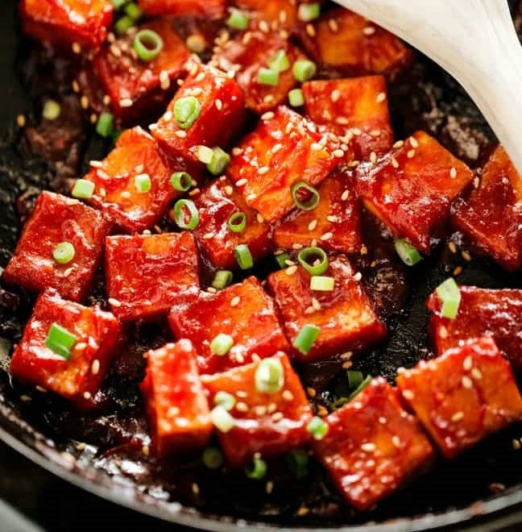

Korean Tofu with Spicy Korean Ketchup
Ingredients
- 3 Tbsp ketchup (also known as tomato sauce in Australia)
- 1 – 1.5 Tbsp gochujang (Korean chili paste)
- 1/2 Tbsp soy sauce, regular
- 1/2 Tbsp honey or maple syrup
- 1 tsp sesame oil
- 1 tsp minced garlic
- toasted sesame seeds (optional)
- green onions, finely chopped (optional)
Directions
- Combine the spicy Korean ketchup sauce ingredients in a bowl. Mix them well and set it aside.
- Pat dry the cubed tofu using kitchen paper. You may also want to gently press them down to squeeze more water out. Pan fry the tofu in a skillet over medium high heat until all sides are golden brown. (It will take 2-3 mins on each side.) Remove the tofu from the skillet and set it aside.
- Pour in the spicy ketchup sauce in the skillet and stir it over medium low heat for about 5 to 10 seconds. Return the tofu to the skillet. Gently coat with the sauce. Sprinkle with sesame seeds and green onions.
- Serve with steamed rice. (It can be served warm or cold.)
Go Back!